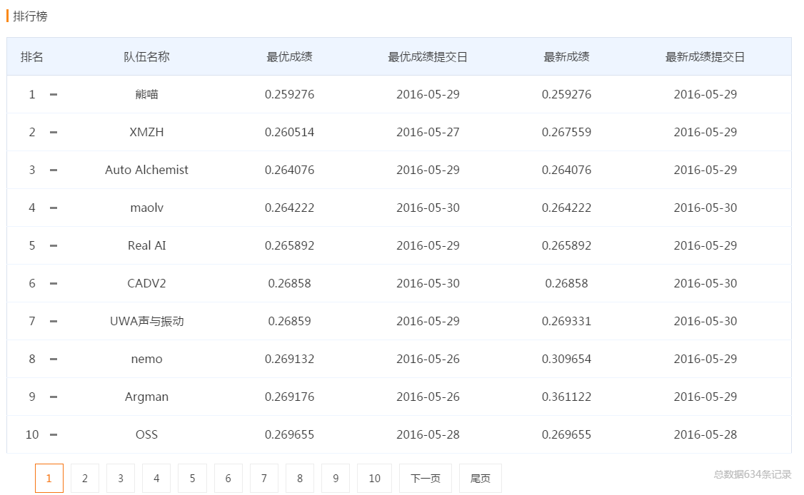
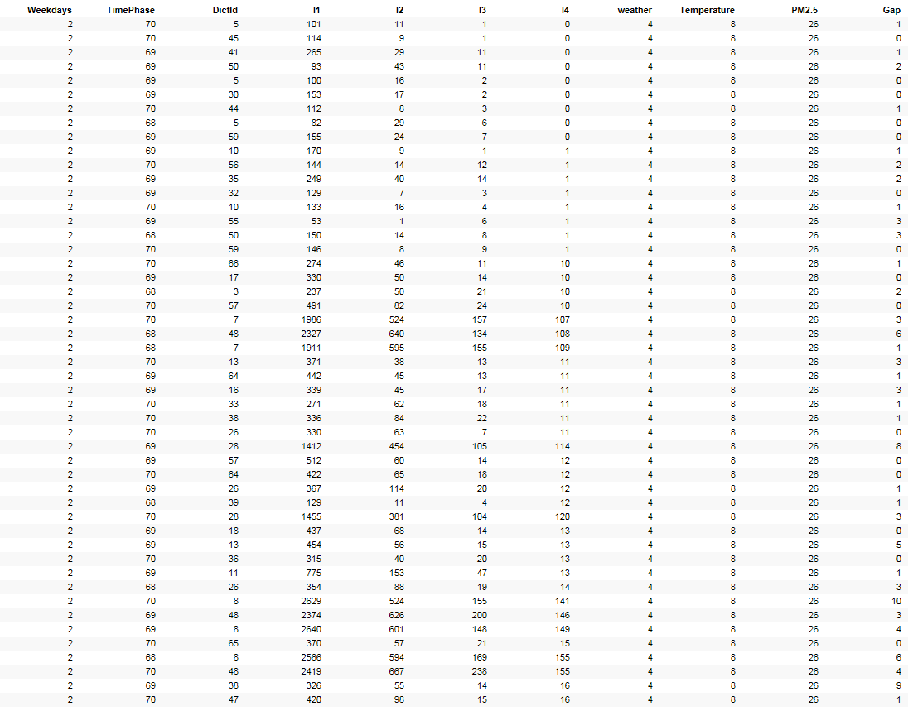

继上一篇初步的分析了一下本次滴滴算法大赛的赛题之后已经过去了十多天了。这几天工作比较忙，一直没有完整的时间来好好更新这篇博客，已经连续两个周末都在家OT做那耗时又枯燥的ETL工作了，空余时候也基本在捣鼓着解解滴滴给出的这个供需缺口预测的机器学习问题，在上周已经预测出了第一版结果，自测成绩为9左右。
这是个什么概念呢，就是对于给定的需要预测时间片和地点区域的预测值和实际值的平均偏差为9，来看一看到今天为止的排名吧：

所以…… 预测结果为9简直就是个shit~高手的结果都已经是3分以内的了~囧~对于有这样糟糕的成绩实，际上在我后来作进一步作数据挖掘和整理的时候已经预计到了，但是本着学习的态度，还是按照前一篇文章的思路采用局部加权回归算法来练练手，当中的一些步骤可谓十分的robust，不管结果如何吧，先把到现在为止所作过的尝试和步骤作一个快速的总结，也算是对之前线性回归和局部加权回归学习算法的的一个案例总结。
首先是要确定输入特征值和输出结果值。
需要输出的结果为供需的缺口值，也就是一定时间内有需求而无接单的情况，可以从订单信息表中根据接单司机字段值为NULL进行锁定，只要有一笔NULL的，就算作是一个缺口，给订单表增加一个字段gap，当司机为NULL时gap为1否则为0。在知乎上看到有人提到要去重，也就是说比如对于某个很相近的时间点同一个乘客同时发了两个需求其中有一个有司机接单另一个没有司机接单，这样的情况不能算作是缺口，这种情况我觉得暂时可以不考虑，我们假设滴滴给出的数据是已经去重的，或者说实际应用过程中可以简单的通过订单状态就能实现去重，而不需要目前自己对一定时间内是否有同样乘客id进行判断。
对于输入的特征值我是这样考虑的，我们需要预测的是某个区域某一时间片的供需缺口值，给定的额外信息有交通拥堵情况，天气情况以及区域内的场所信息POI情况。那么会对某一地区(由于地区是相对固定的，所以我这里按照不同地区来给定不同的训练集合)的供需缺口产生影响的特征有：时间(片)，天气(天气，温度，PM2.5)，拥堵情况(l1,l2,l3.l4)。时间维度我个人感觉再回上了个星期几，因为通过图形对比大致可以看出同一个地区在一个星期不同日子的差异比较大，而在不同星期相同日子的差异相对较小，最后再加入一个偏置值x0，那么正好有10个维度的输入特征。
最终整理完成的包含输入和输出的训练集合看上去是像下面这样子的：

其中gap也就是供需缺口的数量是按照同一地点同一时间片相同拥堵和天气情况作的汇总，提供的数据中，同一时间片可能会对应有多个拥堵情况的数和多次测得的天气数据，数据量总共约有15万条，接着按照地区Id将训练结果进行分解后对应到某个地点也就只有几千条的训练样本数据。接着按照上面的方法将测试数据整理成同样的具有10个维度输入的形式。数据都准备完毕后，我们就可以开始运用局部加权回归算法了。
1.将整理出的需要预测的数据保存成矩阵:matrix_input
2.循环matrix_input矩阵，针对每一条输入数据input提取出以下数据：
时间片:用以最终汇总输出结果
区域id: 用以获取相应的训练相本集合和汇总最终输出结果
10维的特征向量: input_x –将第一列名设为x0，值为1
3.根据区域id，读取对应的训练样本集:train_set，对训练样本集作如下整理：
得到训练样本集输入特征集合并保存成矩阵: train_set_x
得到训练样本的输出结果向量:y
计算输入特征矩阵的转置矩阵: train_set_x_t
4.初始局部加权回归中的步长k＝0.05
5.根据权重计算公式计算权重矩阵W:matrix_w,以及其转置矩阵 matrix_w_t
w(i) = exp(-(x(i)-x)^2/2k)
6.计算参数theta:
theta = (solve(train_set_x_t%%matrix_w%%matrix_w_t%train_set_x%) )%%train_set_x_t%%matrix_w%%matrix_w_t%%y
7.计算最终的预测值:
result <- t(theta) %*% input_x
8.整理最终输出结果为：区域id ，时间片，预测值，保存结果到结果集中
9.根据区域id和时间片汇总
运用以上算法过程中遇到了机器学习课程里没有介绍到的情况就是输入特征的转置矩阵和自身相乘后得到的是奇异矩阵(矩阵的行列式为0)，无法求逆，所以对于这种情况临时快速的引入了一个岭回归的算法，当t(X) %*% X的行列式接近于0时，我们将其主对角元素都加上一个常数r，以尽量的减少其为行列式为零的风险。由于这里的常数我没有结过优化，随便取了个0.28，所以最终得到了平均预测的测试结果为9。上述算法的R语言简单代码如下：
for(i in 1:66){
input <- testMergedFile[i,]
t_datePhase <- input[1]
t_dictId <- input[4]
input_x <- input
input_x[1] <- 1
colnames(input_x)[1] <- "x0"
input_x <- input_x[-4]
input_x <- input_x[-11]
train_set_file <- paste("/Users/Andy/Desktop/Di_Tech/season_1/training_data/dict_data/train_set_dict_",t_dictId,sep = "")
train_set <- read.table(train_set_file)
train_set <- train_set[which(train_set[,11]!=0),]
if(nrow(train_set)>0){train_set_x <- train_set[,1:10]
train_set_y <- train_set[,11]
train_set_x <- as.matrix(train_set_x)
train_set_x_t <- t(train_set_x)
matrix_w <- train_set_x[1,] - input_x
for(t in 2:nrow(train_set_x)){
new_w <- train_set_x[t,] - input_x
matrix_w = rbind(matrix_w,new_w)
}
matrix_w <- matrix_w^2
matrix_w <- exp(matrix_w/((0-2)*k))
matrix_w_t <- t(matrix_w)
theta <- train_set_x_t %*% matrix_w
theta <- theta %*% matrix_w_t
theta <- theta %*% train_set_x
n <- nrow(theta)
diag_n <- diag(n)
theta <- solve(theta+0.28*diag_n)
theta <- theta %*% train_set_x_t %*% matrix_w %*% matrix_w_t %*% train_set_y
result <- as.matrix(input_x) %*% as.matrix(theta)
n_result[1,1] <- t_datePhase
n_result[1,2] <- t_dictId
n_result[1,3] <- result
calResult <- rbind(calResult,n_result)
}
}
第一次尝试用机器学习来解决一个问题，虽然结果算是比较糟糕的，但是起码对局部回权回归算法作了一个实例练习。到目前为止出现的问题主要体现在以下几个方面：
接下来需要进一步思考以上问题，打算重新从一开始的数据挖掘入手，更加深入具体地研究训练样本数据中的规律，或者选择更合适的算法，或者采用更好的输入特征，或者进一步优化算法的参数，争取可以在现有基础上获得一个更好的预测成绩，下一步的目标是预测结果到1以内。